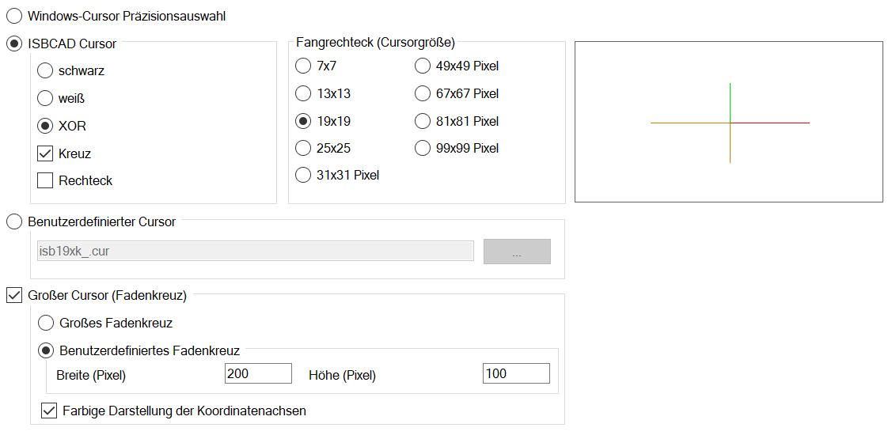

")

Konfiguration des Fadenkreuzes (Cursor) und Fangbereiches. Die ausgewählte Darstellung wird rechts im Dialog als Vorschau angezeigt.
 |
Windows-Cursor Präzisionsauswahl
Verwendet den in Windows® eingestellten Präzisionsauswahl-Cursor.
ISBCAD Cursor
Verwendet den individuell definierten ISBCAD Cursor.
XOR: Der Cursor wird abhängig von dem Hintergrund, über den er bewegt wird, in einer Kontrastfarbe dargestellt. Beispiel: Wenn die Cursorfarbe schwarz ist und Sie diesen über einen schwarzen Hintergrund bewegen, wird der Cursor in weißer Farbe dargestellt.
Fangrechteck (Cursorgröße)
Größe des Fangrechtecks und des Cursors.
Um während der Bearbeitung festzustellen, ob sich der Cursor innerhalb eines Fangbereiches befindet, schalten Sie die Fangmarke ein.
[Option | SysDat | Konstruktionsprogramm → Fangmarke].
Benutzerdefinierter Cursor
Angabe eines in einer Cursor-Datei (*.cur) definierten Cursors.
|
Öffnet die Dateiauswahl. |

 Großer Cursor (Fadenkreuz)
Großer Cursor (Fadenkreuz)
Verwendet zusätzlich zum ausgewählten Cursor ein Fadenkreuz. Das Fadenkreuz wird mit der in den Systemdaten eingestellten Farbe angezeigt.
[Option | SysDat | Farbeinstellungen | Konstruktionsprogramm → Cursor]
Großes Fadenkreuz
Das Fadenkreuz erstreckt sich über die gesamte Zeichnungsdarstellung.
Benutzerdefiniertes Fadenkreuz
Individuelle Größenangaben für das Fadenkreuz.
Farbige Darstellung der Koordinatenachsen
X- und Y-Achse des Fadenkreuzes werden mit den unter [Farbeinstellungen | Konstruktionsprogramm] eingestellten Farben dargestellt. Hilfreich bei gedrehter Darstellung.
Zugehörige Referenz: